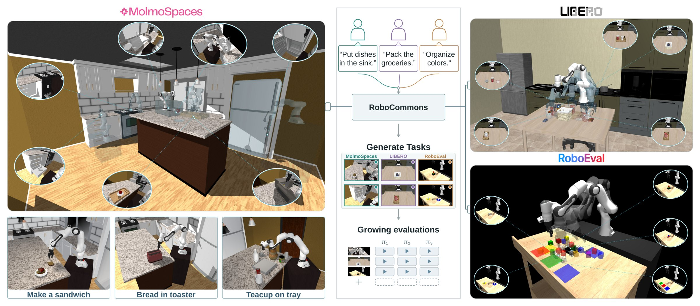
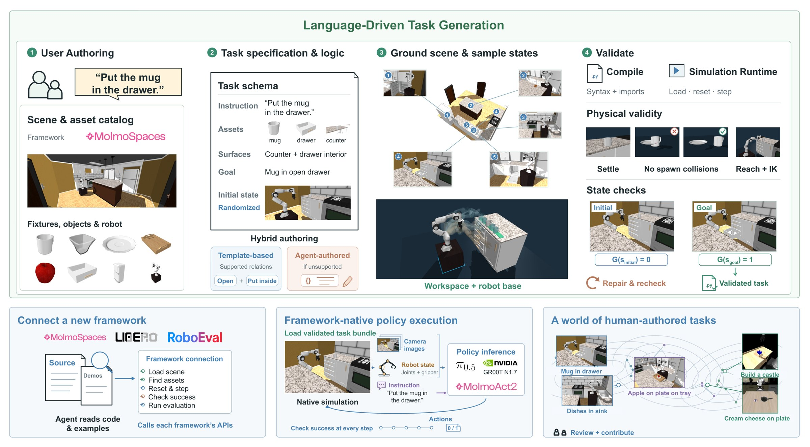
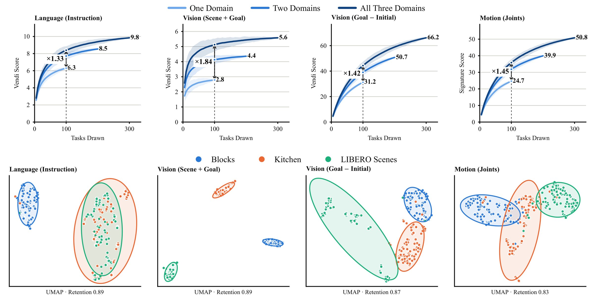
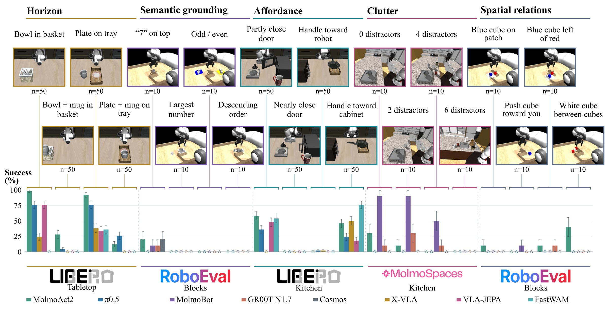
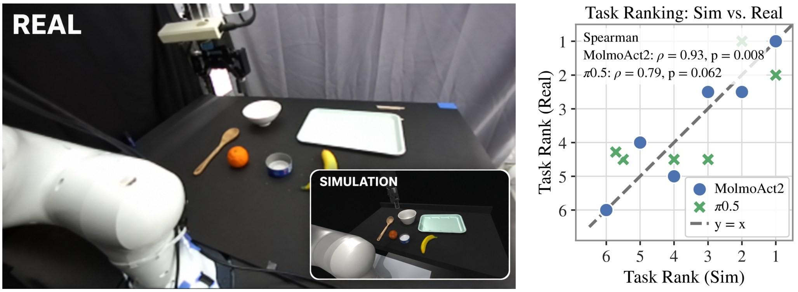

Open-ended orchestration
A language-driven harness that separates what you want to evaluate from how each framework implements it, validated on three MuJoCo frameworks.
Language-driven, multi-framework robot evaluation
Open, Evolving Evaluation for Generalist Robot Policies
1Affiliation One2Affiliation Two

Generalist robotic manipulation policies are rapidly expanding in capability, but their evaluation remains largely tied to fixed benchmarks designed and defined at benchmark design time. We introduce RoboCommons, a language-driven multi-framework harness for open-ended evaluation that lets users specify what they want to test while handling framework-specific task implementation. RoboCommons generates executable, verified tasks across existing manipulation frameworks and accumulates them into a reusable evaluation repository. Using more than 300 generated tasks, we show that evaluation diversity continues to grow as the repository expands. Its automated verifier produces tasks that are 98.5% correct under human adjudication while retaining 93.6% of valid tasks. Across three frameworks, RoboCommons is rated significantly more usable and less cognitively demanding compared to GenSim and Cursor in a 26-participant user study. Finally, across 15 policy–framework combinations and 42,576 episodes, targeted task families reveal distinct capability gaps that are obscured by aggregate success rates. These results show that robotic evaluation can be made easier to author, reliable to execute, and extensible as policy capabilities evolve.
A language-driven harness that separates what you want to evaluate from how each framework implements it, validated on three MuJoCo frameworks.
300+ executable, verified manipulation tasks. Diversity keeps rising as the repository grows and as more frameworks contribute.
Targeted task families expose gaps that one aggregate score hides: the same policy spans 0.9% to 66.4% across families.
Video
Method
A user describes a behavior and picks a framework, scene and assets. A VLM agent, scaffolded with skills and simulator tools, writes the task: instruction, assets and surfaces, a randomized initial state and a goal predicate G. Every task must compile, run, settle without collisions, be reachable, and satisfy G(sinitial) = 0 and G(sgoal) = 1 before it enters the repository.
Describe the behavior in plain language, then choose the framework, scene, fixtures and objects.
The agent defines the policy instruction, assets, surfaces, goal condition and initial-state distribution, using templates for supported relations and writing new logic when needed.
Measured placement regions on real support surfaces; seeded resets sampled inside the robot's workspace.
Compile → simulate → stable, collision-free, IK-reachable → goal reachable and stable. Any failure is diagnosed, repaired and re-checked.

Pick a request to see what RoboCommons produced: the policy instruction, the success predicate it wrote, the verified initial and goal states, and a policy rollout.
Three frameworks, one workflow
RoboCommons does not replace existing infrastructure. To connect a framework, the agent reads its code and examples and exposes native operations for scene loading, asset discovery, simulation, success checking and evaluation.
The repository
Every task below was authored from a language request, verified, and evaluated against five policies. Filter by framework or capability family, search the instructions, hover to watch a rollout, and open a task for its generator prompt, success predicate and per-policy results.
Accessibility & reliability
Each participant authored the same constrained block-building task with all three systems.
Paired Wilcoxon signed-rank tests support both the usability advantage (vs. GenSim p < 0.001; vs. Cursor p = 0.0017) and the workload reduction (p = 0.0007; p = 0.0019). Means ± 95% CI margin.
Rows: human label. Columns: the verifier's decision. Percentages within each row.
Errors are conservative: only 5 incorrect tasks pass, while 23 correct ones are rejected. Rejecting a correct task costs throughput; accepting a wrong one would corrupt the benchmark.
Growth & diversity
We measure diversity of the 300 tasks with the Vendi score (an effective number of distinct samples) over language instructions, rendered scene and goal appearance, goal-relative visual change, and joint-space motion. At a fixed budget of 100 tasks, drawing from three domains instead of one increases diversity on every axis, and least of all on language: instructions alone understate how broad an evaluation set is.

Diagnostic evaluation
We group tasks into five capability families and evaluate eight generalist policies: 15 policy–framework combinations, 42,576 episodes. No combination exceeds 24.8% overall, yet family-level scores separate shared limitations (semantic grounding: no policy above 1.5% anywhere) from families that discriminate between policies (clutter: up to a 66-point spread).
Linked variations
Because tasks are authored from language, it is cheap to write a family of linked variants that hold the goal fixed and vary one factor. These ladders locate exactly where a policy breaks.

Simulation → hardware
We reconstruct a real tabletop scene in RoboCommons, matching its objects, layout and camera pose, and evaluate MolmoAct2 and π0.5 on six tasks in both simulation and the real world.

Citation
@article{robocommons2026,
title = {RoboCommons: Open, Evolving Evaluation for Generalist Robot Policies},
author = {Author One and Author Two and Author Three and Author Four},
journal = {arXiv preprint},
year = {2026}
}